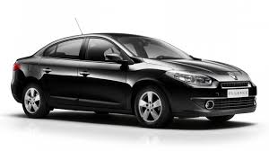
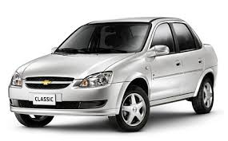
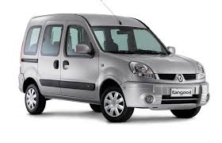
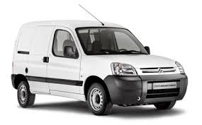
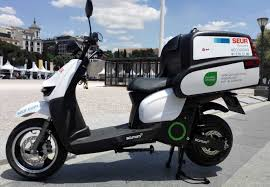
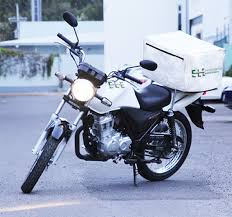

Transportes El Agil S.A. cuenta con una amplia flota de unidades de transporte. Diferentes tipos de bodega nos permiten el traslado de la más amplia gama de productos en sus diferentes modos.
Nuestros vehiculos permiten combinar la comodidad para el traslado de pasajeros, como asi tambien ser compatible con la carga de elementos en el baul
|  |
Renault FluenceEste vehiculo permite el transporte de grandes cargas de hasta 200kg debido a su baúl espacioso o bien permite, adicionalmente, |
|  |
Chevrolet CorsaNuestro auto Corsa 0km, nos da la ventaja de poder realizar viajes mas extensos a un bajo costo gracias a su tubo de GNC disponible. |
Disponemos de vehiculos especialmente destinados a la logistica de grandes cantidades, tanto de personas como de mercaderia
|  | Renault KangooEste vehiculo utilitario que poseemos, nos da dos grandes ventajas:
|
|  |
Citroen Berlingo FurgonEste vehiculo esta ideado para grandes cargas, permitiendo solamente el transporte de una persona. Posee las siguientes caracteristica
|
El disponer de motos en nuestra flota, nos brinda la posibilidad de realizar entregas livianas en tiempos cortos en cualquier punto de la ciudad, evitando habituales las congestiones
|  |
Moto Honda 100ccNuestra hermosa moto Honda, nos da la facilidad de realizar traslados de paquetes, sobres, cartas, y cualquier otro elemento |
|  |
Moto Suzuki 200ccEste gran vehiculo, permmite el traslado de elementos de menor capacidad que la mencionada anteriormente |